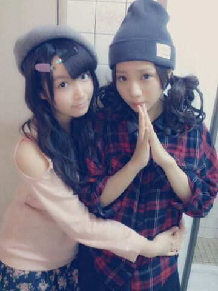
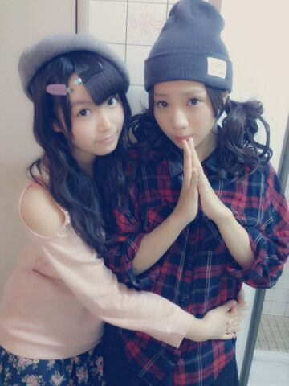
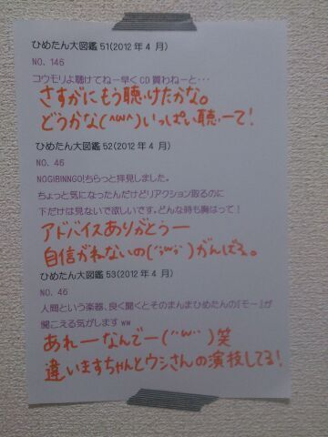

| 2013/09 30 Mon | ひめたん(*>ω<*)そ の349 |
昨日は名古屋個握でしたっ


来てくださったみなさん
ありがとうございました！

愛未 (能條愛未ちゃん)ぎゅーっ///
愛未にはいつも
手のひらで転がされるんだけどね
それも愛情表現らしいです
ひめたんは何度話をスルーされても←
めげずに
あみーあみーって言いたくなる
そーゆー年頃です(〃ω〃)
そして背景がおもいっきしお手洗いです
気にしたら負け。
そう、昨日のみんなのブログ読んでたら
ひめたんがいっぱいでてきたね☆
昨日は ねねころ (伊藤寧々ちゃん)とは
写め撮りあいこしたんだよー
てことで昨日の全身写め！

なんでだろ。ライトの関係かな
色味が伝わる気がしない。
グレーのベレー帽、
ピンクのニット、
紺のお花柄ふりふりパンツ
パンプスは本番前に
自前のスリッパにはきかえました
でもね昨日わかったスリッパも動きにくい！
そしてさっきから
羽根ピンはファッションじゃないですよーう( ^ω^ )
あ、そうそう、珍しく(小声)
川後P (川後陽菜ちゃん)にも褒められたんだよー
そしてこの写めじゃ伝わんないけど
ニットは肩出しになってて
りぼんもついてます。
紺のお花柄フリフリはこの秋重宝する！
そう！そーなの
グレーのねベレー帽ねさがしてるってね
前書いたと思うんだけどね
ついにみつけたの！
でもね１年前にベレー帽かぶったときにね
握手開始直後にとれちゃった失敗を
ここでもいかせず......
なのでみてなーいって方も
いらっしゃるかも。ごめんねー(´・ω・｀)
昨日はたくさんの方がきてくださって
本当に楽しかったよー！
遠征組さんもお疲れさまでした
名古屋の方は会いに来れてよかたーです
おじゃましましたっ
５部から登場てことで
朝からがんばって待っててくださったみなさん
お疲れさまー
みなさんのおかおも
いっぱい覚えたい気持ちはあるんです！！
だからちょっと遅いかもしれないけど
がんばって覚えるから
気長に待っててくださると嬉しい......
間違えちゃったり名前出てこなかったり
いろいろ失礼しちゃうかもだけど
そーゆ時はあたたかーく叱ってください(⊃⊂)
来てくださったみなさん
ありがとうございました！
愛未 (能條愛未ちゃん)ぎゅーっ///
愛未にはいつも
手のひらで転がされるんだけどね
それも愛情表現らしいです
ひめたんは何度話をスルーされても←
めげずに
あみーあみーって言いたくなる
そーゆー年頃です(〃ω〃)
そして背景がおもいっきしお手洗いです
気にしたら負け。
そう、昨日のみんなのブログ読んでたら
ひめたんがいっぱいでてきたね☆
昨日は ねねころ (伊藤寧々ちゃん)とは
写め撮りあいこしたんだよー
てことで昨日の全身写め！

なんでだろ。ライトの関係かな
色味が伝わる気がしない。
グレーのベレー帽、
ピンクのニット、
紺のお花柄ふりふりパンツ
パンプスは本番前に
自前のスリッパにはきかえました
でもね昨日わかったスリッパも動きにくい！
そしてさっきから
羽根ピンはファッションじゃないですよーう( ^ω^ )
あ、そうそう、珍しく(小声)
川後P (川後陽菜ちゃん)にも褒められたんだよー
そしてこの写めじゃ伝わんないけど
ニットは肩出しになってて
りぼんもついてます。
紺のお花柄フリフリはこの秋重宝する！
そう！そーなの
グレーのねベレー帽ねさがしてるってね
前書いたと思うんだけどね
ついにみつけたの！
でもね１年前にベレー帽かぶったときにね
握手開始直後にとれちゃった失敗を
ここでもいかせず......
なのでみてなーいって方も
いらっしゃるかも。ごめんねー(´・ω・｀)
昨日はたくさんの方がきてくださって
本当に楽しかったよー！
遠征組さんもお疲れさまでした
名古屋の方は会いに来れてよかたーです
おじゃましましたっ
５部から登場てことで
朝からがんばって待っててくださったみなさん
お疲れさまー
みなさんのおかおも
いっぱい覚えたい気持ちはあるんです！！
だからちょっと遅いかもしれないけど
がんばって覚えるから
気長に待っててくださると嬉しい......
間違えちゃったり名前出てこなかったり
いろいろ失礼しちゃうかもだけど
そーゆ時はあたたかーく叱ってください(⊃⊂)

 男性に着て欲しいコートの色ゎ？
男性に着て欲しいコートの色ゎ？
なんだろうねー
ベージュとか紺とかステキなんじゃないかしら。
ひめたんはベージュ、グレー、紺のコート
持ってるよー(^O^)
ひめたんは文化祭なにかやりますか???
お化け屋敷をしましたー
いやー誰かをおどかすのって
難しいんだね！
ひめたんはこれだけは譲れんってものあるー？
基本的なあいさつとか、
スクールで教えていただいたことは
忠実に守るようにしてますよー
ってもハンドマイクの持ち方だけは
当時から直りませんぬ(´・ω・｀)
地元トークしたいんじゃけどええ？
広島人かもんん！
ひめたんのブログの写メ毎回可愛いんだけど、
何回くらい撮り直してるの？
時と場合によりけりです
調子がいいときは一発だし
粘るときはとっこっとっん粘ります。
今受験生で毎日勉強してるんだけど
眠くならない方法ありませんかー？？
授業毎時間寝ちゃうひめたんが
質問にお答えしましょう。
ちまのブログにあったカフェインとるのは
ひめたんもたまにやりますよー
あとは、眠くなったら
いくらやってもはかどらんので
15分仮眠とるとか、もしくは３時間とか寝て
朝プランに切り替えます
寝坊したらどんまい＼(^O^)／応援してます！
ひめたんのエクボかわいいんだけど、
小さい時からあるの？
そーですねーひめたんのが記憶が正しければ
幼稚園年中さんですでにあったよー
ちっちゃい時はコンプレックスでした。青いねー
少しずつで良いので、
仲良くなっていただけますか？
やたーい＼(^O^)／
仲良しさんなろなろー♪
(<・ω・>)
この顔文字気に入ってしまったｗ
乱用してもいいかな？
乱用、かあー大事につかってあげて(笑)
結構便利だよ(<・ω・>)
わたしひめたんと双子組みたーい
双子ちゃーん///
えーどうしよう双子ちゃーんできちゃったー
ひめたんが妹ちゃんでいいの？お姉ちゃんっ///
たわんけ代わりにはわいとってくれん？
たわん、はわかるんじゃけどさー
はわいって何なん？ハワイ？
鏡よ鏡よ鏡さん
ひめたんはどうしてそんなに可愛いの？
おまえさんはきっと
ものすごーくお疲れなんだね。
しっかり寝なさいおやすみ。
ちま (樋口日奈ちゃん)のブログには
実はそのあと続きがあるのー
これはまた今度ねっ
次回、初のエア握手会を開催します！
２日３日４日ほど並んで待っててねー
◎アメブロさん
◎朝日新聞「乃木坂Choice」
ひめたんの当番の日です
忙しいねーでも全部チェックしてね( ^ω^ )
全部チェックしてね( ^ω^ )

(＊´・ω・＊)
コメント(288)
2013/09/30 23:48